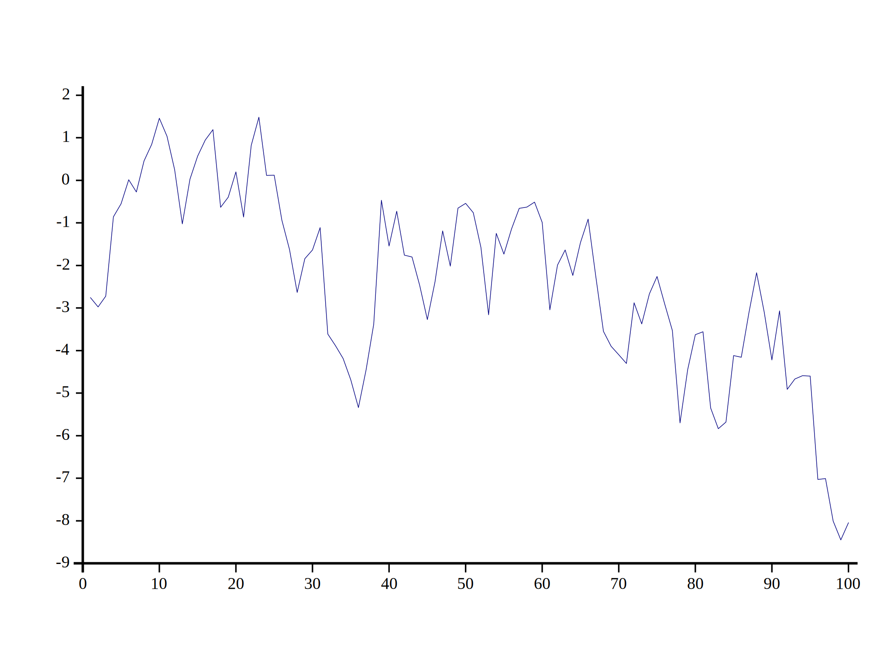
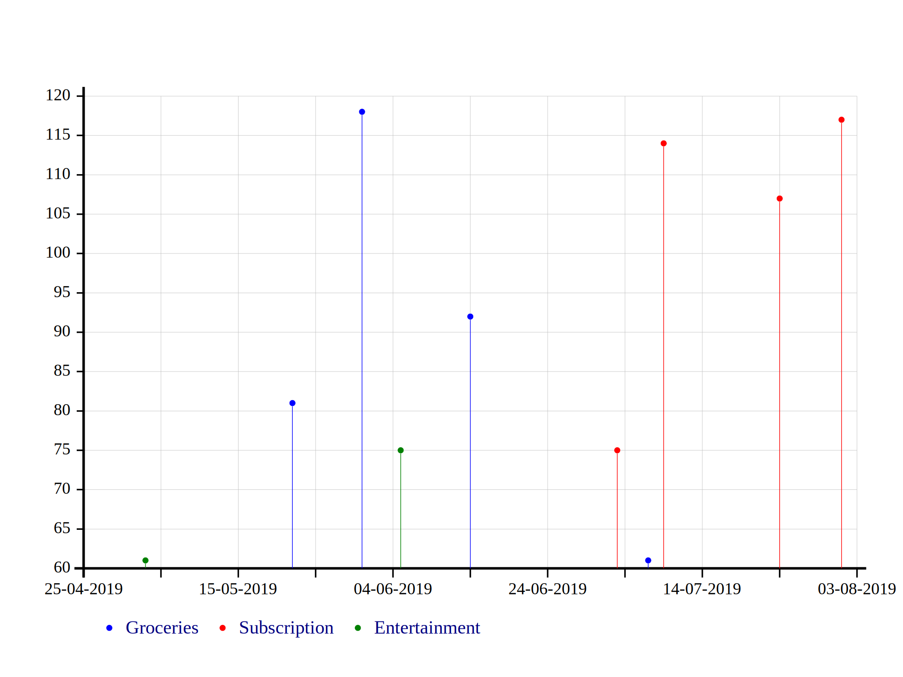
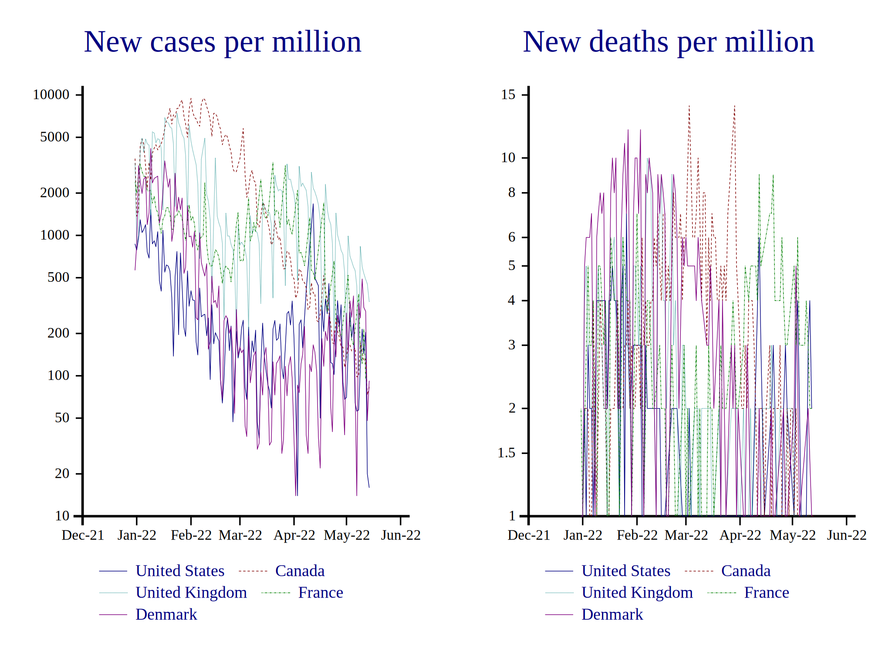

Plotting with SharpPlot¶
This Cultivation was hosted by Nicolas Delcros. Nicolas also gave a presentation on SharpPlot at the Dyalog ‘13 user conference, and there are several blog posts available on the topic, too.
SharpPlot is a professional charting and typesetting engine that ships with Dyalog APL. If you want to draw graphs or plot functions using APL, SharpPlot has you covered. SharpPlot comes in two versions, firstly a native .NET bundle that can be used through Dyalog’s .NET integration, and secondly as a pure APL workspace, referred to as Causeway. Whilst they’re identical in terms of functionality, the former tends to be faster, but the latter obviously has the advantage of working everywhere Dyalog works, without the need to have access to .NET. We’ll be using the Causeway approach here.
Let’s kick this off with an example! First we need to pull in two functions from the sharpplot workspace.
'InitCauseway' 'View' ⎕CY'sharpplot'
⎕RL←16807 1 ⍝ fixed seed for random numbers
Let’s write a function we can use to generate some data to plot,
]dinput
NormalRandom ← {
depth ← 1000000000 ⍝ Randomness depth
(x y) ← ⊂[1+⍳⍴,⍵](?(2,⍵)⍴depth)÷depth ⍝ Two random variables within ]0;1]
((-2×⍟x)*0.5)×1○○2×y ⍝ https://en.wikipedia.org/wiki/Box-Muller_transform
}
Now we can draw a SharpPlot line graph:
line ← ⊃↓+\NormalRandom 5 100
InitCauseway ⍬
sp ← ⎕NEW Causeway.SharpPlot
sp.DrawLineGraph ⊂line ⍝ Single argument must be enclosed
sp.SaveSvg 'plot1.svg' Causeway.SvgMode.FixedAspect ⍝ Write the graph image to disk

Unfortunately, many of the SharpPlot functions don’t actually return anything, making them tricky to use inside a dfn. Here’s a somewhat hideous workaround for this,
]dinput
Plot ← {
do ← {⍎'⍺⍺ ⍵ ⋄ ⍵' ⋄ ⍺⍺}
_ ← InitCauseway do ⍬
sp ← ⎕NEW Causeway.SharpPlot
_ ← sp.DrawLineGraph do ⍵
sp
}
You may have gathered that what we get returned from this function is a SharpPlot instance, with a bunch of methods and properties. You might draw another line graph, or any other kind of graph, or add some notes, perhaps.
Ok, let’s plot some more involved data. Here we have some personal account-keeping, showing expenditures of different types across a set of dates. A quirk here is that SharpPlot uses so-called “OLE dates” which are one-off to international day numbers (IDN ― the number of days since the beginning of 1899-12-31).
'date'⎕CY'dfns'
↑(date¨43578+?20⍴100)(('Groceries' 'Entertainment' 'Subscription')[?20⍴3])(20+?20⍴100)
∇ sp ← Budget size;count;dates;oledates;type
dates ← date¨43578+size?10×size
type ← 'Groceries' 'Entertainment' 'Subscription'[?size⍴3]
count ← 20+?size⍴100
oledates ← {1+2 ⎕NQ'.' 'DateToIDN'⍵}¨dates
InitCauseway ⍬
sp ← ⎕NEW Causeway.SharpPlot
sp.SplitBy⊂type ⍝ single argument must be enclosed
sp.ScatterPlotStyle ← Causeway.ScatterPlotStyles.(GridLines+Risers)
sp.SetColors System.Drawing.Color.(Blue Red Green)
sp.SetMarkers Causeway.Marker.Bullet
sp.XAxisStyle ← Causeway.XAxisStyles.(Date)
sp.XDateFormat ←'dd-MM-yyyy'
sp.DrawScatterPlot count oledates
∇
gr ← Budget 10
gr.SaveSvg 'plot02.svg' Causeway.SvgMode.FixedAspect

Here’s a subset of Our World In Data’s dataset on COVID-19. We’ve picked out the data for United States, Canada, United Kingdom, France and Denmark, plotting the new cases per million, and new deaths per million over time, starting from January, 2022. We did a bit of data slicing and date conversion outside APL, detailed here, in order for us to be able to focus mainly on the plotting aspect.
∇ {sp}←OwidCovidData;Causeway;InitCauseway;View;countries_to_plot;csv;data;date;dates;field;fields_to_plot;location;locations;miss;row;sp;values
miss ← ¯1E300 ⍝ missing value
csv ← {⎕CSV ⍵ ⍬ 4} '/Users/stefan/work/data/covid_subset2.csv'
dates ← {⍵[⍋⍵]}∪date ← 20 1⎕DT csv[;2]
csv[;2] ← date
locations ← ∪location←csv[;1]
row ← csv[;1 2]⍳↑locations∘.{⍺ ⍵}dates
csv ⍪← (⊂'')(⊂'')miss miss
data ← csv[row;3 4]
fields_to_plot ← 'New cases per million' 'New deaths per million'
countries_to_plot ← 'United States' 'Canada' 'United Kingdom' 'France' 'Denmark'
'InitCauseway' 'View'⎕CY'sharpplot'
InitCauseway ⍬
sp ← ⎕NEW Causeway.SharpPlot
sp.MissingValue ← miss
sp.SetTrellis ≢fields_to_plot
:For field :In ⍳≢fields_to_plot
sp.NewCell
sp.Heading ← field⊃fields_to_plot
sp.MarginBottom ← 70
sp.SetKeyText ⊂countries_to_plot
sp.YAxisStyle ← Causeway.YAxisStyles.LogScale
sp.XAxisStyle ← Causeway.XAxisStyles.(Date+MonthlyTicks)
sp.XDateFormat ← 'MMM-yy'
values ← ↓data[;;field]
sp.DrawLineGraph values dates
sp.DrawKey ⍬
:EndFor
∇
InitCauseway ⍬
cov ← OwidCovidData
cov.SaveSvg 'plot03.svg' Causeway.SvgMode.FixedAspect
